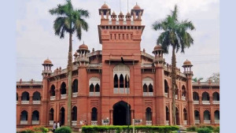

আপনারা দেখছেন আজকের সর্বশেষ খবর
উপদেষ্টা পরিষদের বৈঠক জলবায়ু ট্রাস্টের ৮৭৩ কোটি টাকা পদ্মা ব্যাংকে, অন্য ব্যাংক থেকেও অর্থ
জুলাই গণ-অভ্যুত্থানে শহীদদের স্মৃতি সংরক্ষণ ও শহীদ পরিবারের দেখাশোনা করার জন্য ‘জুলাই শহীদ স্মৃতি ফাউন্ডেশন’ গঠন। এর সভাপতি হিসেবে আছেন প্রধান উপদেষ্টা ড. মুহাম্মদ ইউনূস।
ব্যবসায়ীদের প্রধান উপদেষ্টা নতুন দেশ গড়তে আসুন একসঙ্গে কাজ করি
নতুন বাংলাদেশ গড়ে তুলতে ব্যবসায়ীদের সহযোগিতা চেয়েছেন অন্তর্বর্তী সরকারের প্রধান উপদেষ্টা ড. মুহাম্মদ ইউনূস। ব্যবসায়ীদের উদ্দেশে তিনি বলেন, ‘সরকারের পাশাপাশি বেসরকারি খাতের প্রতিনিধি হিসেবে ব্যবসায়ীদের
প্রশাসনে স্থবিরতা, অসহযোগিতার অভিযোগ তথ্য উপদেষ্টার
নাহিদ ইসলাম বলেন, ‘প্রতিদিনই নতুন নতুন সমস্যা আসছে, আন্দোলন আসছে, দাবিদাওয়া আসছে। সেগুলো আমাদের মোকাবিলা করতে হচ্ছে। শ্রমিক অসন্তোষ চলছে।’
আরেক মহামারি নিয়ে উদ্বেগে বিল গেটস
বিলিয়নিয়ার মানবহিতৈষী বিল গেটস জলবায়ু বিপর্যয় এবং বিধ্বংসী সাইবার আক্রমণের মতো জরুরি বিষয়ে জনসাধারণকে বারবার সতর্ক করেছেন। তবে যে দুটি সংকট তাঁকে সবচেয়ে বেশি উদ্বিগ্ন
রাজনীতি

বিএনপিতে ‘অনুপ্রবেশকারীরাই’ চাঁদাবাজি করছে: সেলিমা
ওষুধ শিল্পের বিকাশে পাশে থাকবে বিএনপি
খালেদা জিয়াকে বিদেশে পাঠানোর বিষয়টি ‘পর্যালোচনা’ চলছে: চিকিৎসক
সংস্কার দ্রুত শেষ হোক, নির্বাচিত সংসদ দিয়ে দেশ চলবে: ফখরুল
মাঝ রাতে হাসপাতালে ভর্তি খালেদা জিয়া
প্রবাস
‘মুক্তিযুদ্ধের আদর্শে’ দেশ পরিচালনার আহ্বান লন্ডনে
সিঙ্গাপুরে নজরুল স্মরণে ‘অ্যা ট্রিবিউট টু রেবেল পোয়েট’
প্যারিসে প্রবাসী সোহেল আহমদের দুটি কাব্যগ্রন্থের পাঠ-উন্মোচন
মালয়েশিয়ায় ১৮ দিন পড়ে ছিল প্রবাসীর লাশ, দেশে আসছে চাঁদার টাকায়
চীনে ‘সংগঠনের গতিশীলতা বাড়াতে’ বিএনপির সভা
বিজ্ঞান
মঙ্গলের বিশাল গিরিখাতের রহস্য উদঘাটন করবে এক ঝাঁক রোবট
দাঁতওয়ালা প্রাচীন পাখিটি মাছের বদলে ফল খেত
পানির সন্ধানে চাঁদে খনন যন্ত্র পাঠাচ্ছে ইউরোপ
পৃথিবীর বায়ুমণ্ডলে তরঙ্গ তৈরি হয় গ্রহণের জন্যই: নাসা
অতি উত্তপ্ত এক্সোপ্ল্যানেটে মিলল ‘লোহার বাতাস’
ক্যাম্পাস
ঢাকা বিশ্ববিদ্যালয়ে ক্লাস শুরু ২২ সেপ্টেম্বর
ঢাকা বিশ্ববিদ্যালয়ে ‘গণবিয়ে’ আয়োজনের খবরে হইচই
ঢাবির উপ-উপাচার্য হলেন অধ্যাপক মামুন আহমেদ
বুয়েটের নতুন ভিসি অধ্যাপক বদরুজ্জামান
সাউথইস্টের চার শিক্ষার্থীর পরিবার পেল ৪০ লাখ টাকা সহায়তা